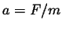
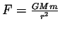
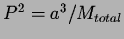

Next: About this document ...
Review and Discussion of Ch. 2: The Heliocentric
Revolution
- What contributions to modern astronomy were made by
Chinese and Islamic astronomers during the Dark Ages of
medieval Europe?
- Briefly describe the geocentric model of the universe.
- The benefit of our current knowledge lets us see flaws in the Ptolemaic model of the universe. What is its basic flaw?
- What was the great contribution of Copernicus to our knowledge of the solar system? What was still a flaw in the Copernican model?
- What is a theory? Can a theory ever be proved to be true?
- Dictionary definition: "a scheme of relations subsisting between the parts of a systematic whole"
- Differentiate theory from hypothesis.
- A theory is usually bigger and more all-encompassing than an hypothesis.
- Example: electromagnetic theory.
- A theory cannot be proven, only disproven.
- When were Copernicus' ideas finally accepted?
- No definite answer because it was a gradual process and there still may be skeptics today.
- The majority probably accepted the heliocentric theory by the end of Newton's life.
- What is the Copernican principle?
- That we are not at the center of things. First, this applied
to our solar system, then to our galaxy, then our universe. It could
even be that ours is not the only universe - but it is the only observable
universe.
- What discoveries of Galileo helped confirm the views of Copernicus, and how?
- The gibbous phase of Venus was the only one that disproved the Ptolemaic system.
- The moons orbitting Jupiter.
- Mountains and valleys on the Moon.
- The Sun has spots and rotates.
- Briefly describe Keplers three laws of planetary motion.
- How did Tycho Brahe contribute to Keplers laws?
- If radio waves cannot be reflected from the Sun, how can radar be used to find the distance from Earth to the Sun?
- How did astronomers determine the scale of the solar system prior to the invention of radar?
- What does it mean to say that Kepler's laws are empirical?
- They are derived from observations, not theory.
- What are Newtons laws of motion and gravity?
- 1st law: an object continues at constant velocity until acted on by
a net force.
- 2nd law: an object accelerates proportional to the force acted on
it ().
- 3rd law: for every force there is an equal but opposite counter -
force.
- Law of Gravitation: the force of gravity obeys an inverse-square
law:
.
- List the two modifications made by Newton to Keplers laws.
- Kepler's 1st law was modified to say that the planets
move in elliptical orbits with the solar system's center of mass
at one focus (not the Sun).
- Kepler's 3rd law was modified to apply to any two-body system.

- Why do we say that a baseball falls toward Earth, and not Earth toward the baseball?
- Both the Earth and the baseball experience an attractive force,
and both feel a force of the same magnitude. However, the Earth is so much
more massive that its acceleration is imperceptible, while the baseball
clearly accelerates.
- Why would a baseball go higher if it were thrown up from the surface of the Moon than if it were thrown with the same velocity from the surface of Earth?
- The force of gravity is weaker on the Moon, so the baseball
accelerates far less, thereby moving in a gentler trajectory.
If there were no gravity, the ball would continue in a straight line.
- In what sense is the Moon falling toward Earth?
- In the sense that it is not moving in a straight line,
but is continuously curving towards the Earth. Although its
distance is not always decreasing, there is a force attracting
it towards the Earth.
- What is the meaning of the term escape speed?
- The speed required of an object to escape from the
gravitational pull of a (usually larger) object. By ``escape", we
mean that the object will never return to its starting point
(unless some other force acts upon it), but continually move
farther away.
- What would happen to Earth if the Sun's gravity were suddenly "turned off"?
- The Earth would continue moving at about 29 km/s, but instead
of moving in a nearly-circular orbit, it would move in nearly a straight
line.
Next: About this document ...
Jason Pinkney
2004-01-04